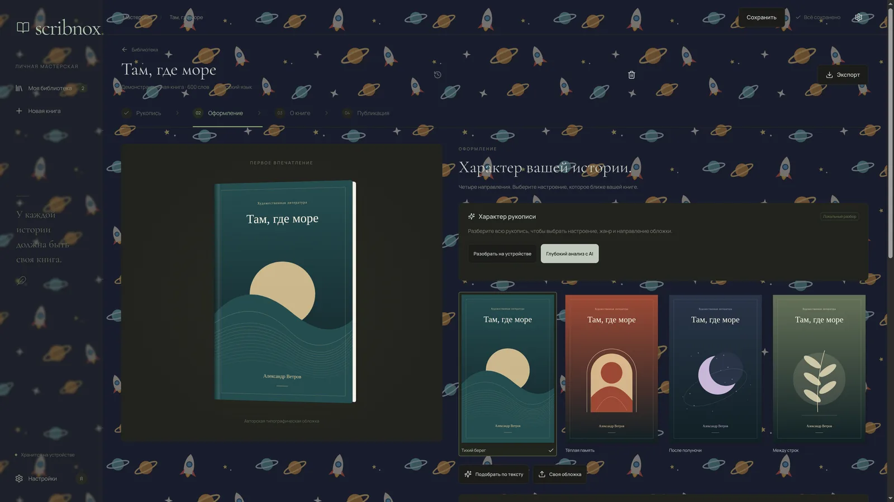

Настоящая книга, а не документ
Смотрите на книгу глазами читателя.
Scribnox раскладывает рукопись по страницам в виде печатного разворота — так структуру, ритм и объём легко оценить прямо во время работы.
- Проза или стихи, размер шрифта и интервалы — на ваш выбор
- Светлая и тёмная темы для долгой работы
- Русский и английский — и в интерфейсе, и в рукописях
